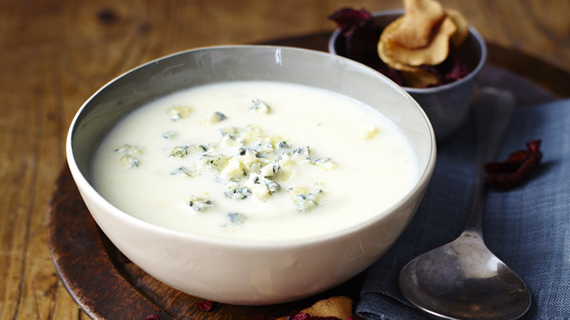

<!--
 Name:Neville Zou
 Student Id:
-->
<div class="pages">
<div data-page="projects" class="page no-toolbar no-navbar">
   <div class="page-content">
      <!--top header-->
      <div class="navbarpages">
         <div class="nav_left_logo"><a href="index.html"></a></div>
         <div class="nav_right_button">
		 <!--A link to Open Main Nav-->
            <a href="menu.html"></a>
			<!--A link to go back to Previous Page-->
            <a href="food-menu.html"></a>
         </div>
      </div>
	   <!--top header-->
      <div id="pages_maincontent">
         <h2 class="page_title">Our Recepie</h2><!-- heading tag-->
         <div class="post_single">
		   <!--Recipe Image And title-->
            <div class="featured_image">
               
               <div class="post_title_single">
                  <h2>finest* parsnip, pear and Wensleydale blue soup</h2>
               </div>
               <div class="post_social">
                  <a href="#" data-popup=".popup-social" class="open-popup"></a>              
               </div>
            </div>
			  <!--Recipe Image And title-->
			   <!--Recipe Detail-->
            <div class="page_content">
               <div class="entry">
                  <ul class="simple_list"><!-- unorderlist tag-->
                     <li>  Heat the butter in a large pan and add the parsnip cubes. Toss the parsnip cubes in the butter for 2 minutes. Add the stock, bring up to the boil and simmer for 10 minutes. Add the chopped pears, season with freshly ground black pepper and cook gently for 20 minutes more.</li><!--LIst items-->
                     <li> Heat the butter in a large pan and add the parsnip cubes. Toss the parsnip cubes in the butter for 2 minutes. Add the stock, bring up to the boil and simmer for 10 minutes. Add the chopped pears, season with freshly ground black pepper and cook gently for 20 minutes more.
                     </li>
                  </ul>
               </div>
            </div>
			 <!--Recipe Detail-->
         </div>
      </div>
   </div>
</div>